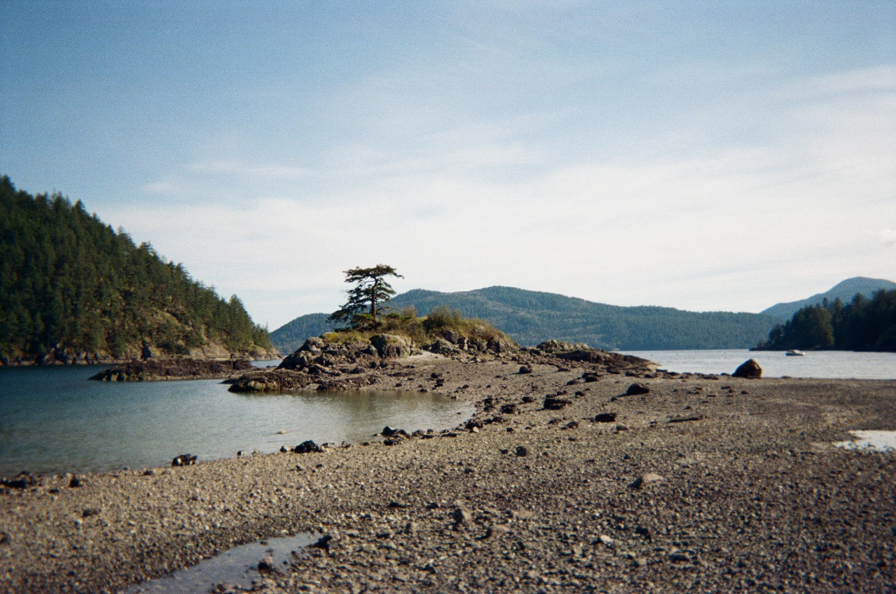
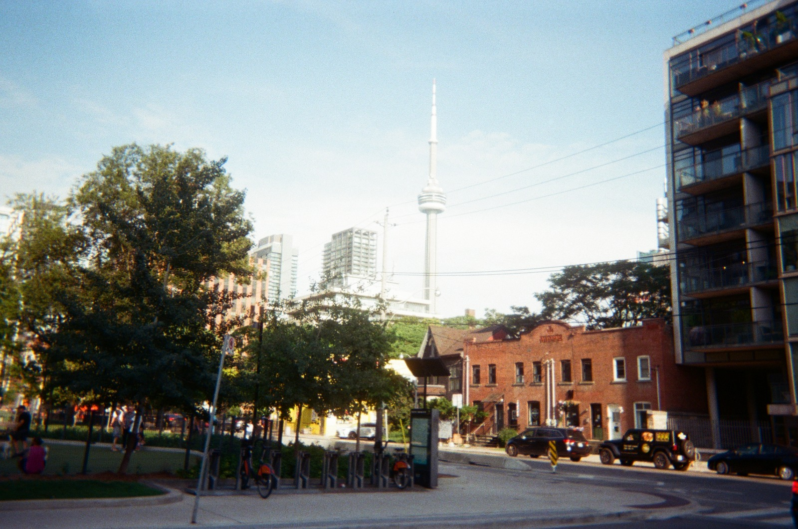
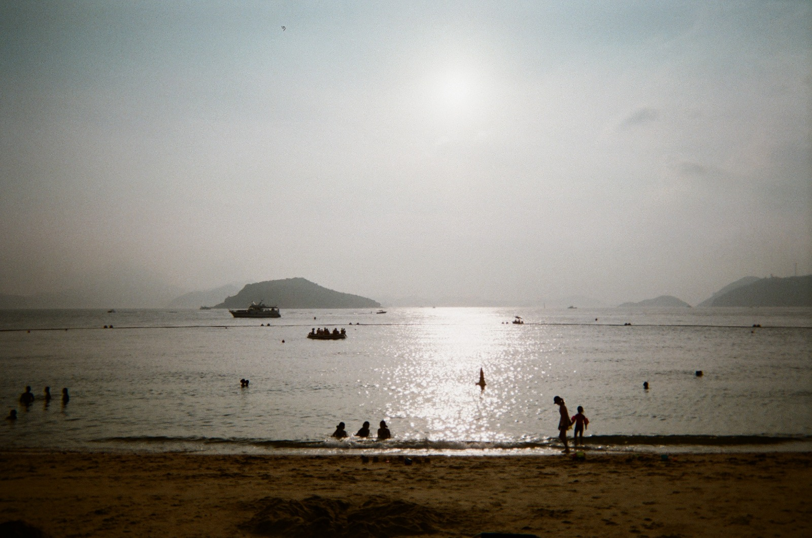
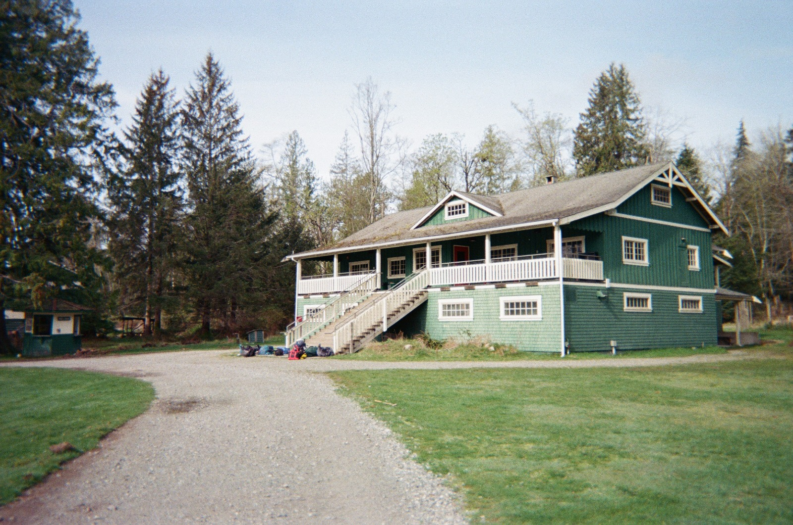
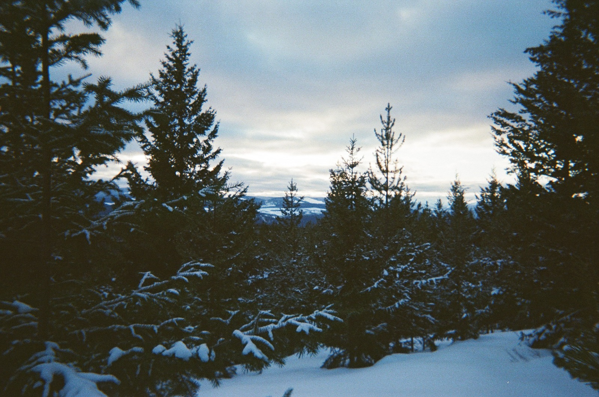
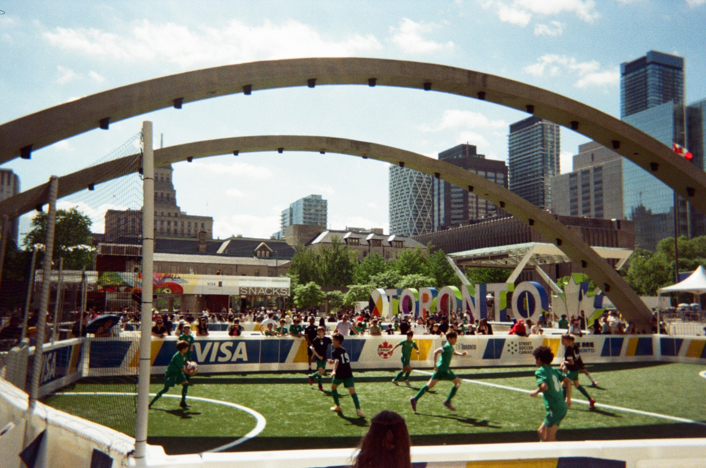

Joanna Lau
I study CS at the University of Waterloo, with an interest in agents and distributed systems.
I enjoy adventuring and taking film photos of my experiences.






Work
NationGraphSoftware Engineer Intern
2026
deep research agent, automations optimizations, product features
GraycoreSoftware Engineer Intern
2026
ecommerce infrastructure